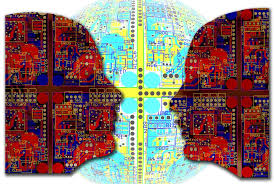
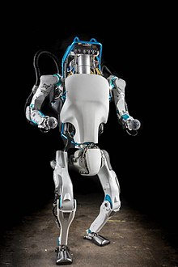

Applications on Artificial Intelligence.

Heavy industry
Robots have become common in many industries and are often given jobs that are considered dangerous to humans. Robots have proven effective in jobs that are very repetitive which may lead to mistakes or accidents due to a lapse in concentration and other jobs that humans may find degrading.

Hospitals and medicine
Artificial neural networks are used as clinical decision support systems for medical diagnosis, such as in Concept Processing technology in EMR software.

Other tasks in medicine that can potentially be performed by artificial intelligence and are beginning to be developed include:
Computer-aided interpretation of medical images. Such systems help scan digital images, e.g. from computed tomography, for typical appearances and to highlight conspicuous sections, such as possible diseases. A typical application is the detection of a tumor.
Heart sound analysis
Companion robots for the care of the elderly
Mining medical records to provide more useful information.
Design treatment plans.
Assist in repetitive jobs including medication management.
Provide consultations.
Drug creation
Using avatars in place of patients for clinical training
Predict the likelihood of death from surgical procedures
Predict HIV progression
Human resources and recruiting
another use of AI is in the field of human resources and space recruitment. There are three ways in which AI is used by human resources and recruitment professionals: to screen resumes and rank candidates according to their level of qualification, to predict candidate success in given roles through job matching platforms, and to roll out the recruitment of chatbots that can automate repetitive communication tasks.generally, resume screening involves a recruiter or other HR professional scanning through a database of resumes.
Online and telephone customer service
Artificial intelligence is applied in digital online assistants that can be presented as avatars on web sites. Companies may use it to decrease their operational and training costs.
Natural language processing is a major technology underlying these systems. Pypestream uses automated customer support for its mobile application to streamline contact with customers.
Major businesses are investing in AI to deal with demanding customers in the future. Google's most recent development analyzes language and converts speech to text. The platform can identify angry customers in their language and respond appropriately.
games
organizations like Mattel have developed a number of AI-enabled products for children as young as three years of age. Using patented AI engines and speech recognition software, they are able to understand interactions that provide smart responses and learn quickly.
AI has also been applied to video games, such as video game bots, which are designed to stand in as opponents where humans are not available, or desired.
Links: